Sanski Most, stara fotografija · Iz knjige „Sanski Most nekad i sad“
~2600 pr. n. e.
I · Prahistorija
Prvi stanovnici
U Hrustovačkoj pećini, oko 12 km od grada, živjeli su ljudi vučedolske kulture. Nalazi iz nje dovoljno su osobeni da arheolozi govore o posebnom, hrustovačkom tipu te kulture, raširenom dolinama Sane i Une.
Hrustovački tip datira se u kasno bakarno doba, oko 2600-2500. godine prije nove ere. Nalazi se čuvaju u Zemaljskom muzeju u Sarajevu, a pećina je nacionalni spomenik Bosne i Hercegovine.
Mnogo kasnije ovim krajem žive Mezeji, ilirski narod koji rimski pisci smještaju između Sane i Vrbasa. Njihovo rudarsko središte Splonum bilo je negdje na Sani, ali još nije pronađeno. Rimljani su ih pokorili, stanovnike s utvrđenih gradina naselili u doline, a između Sane i Japre uredili rudarski distrikt.
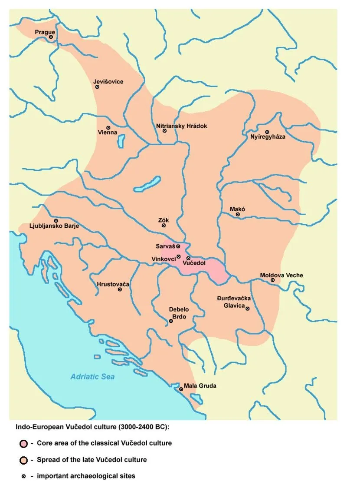
Područje vučedolske kultureIz knjige „Sanski Most nekad i sad“
Hrustovačka pećina danasFotografija sa stranice mjesta · Pogledajte mjesto →
12km
od grada do Hrustovačke pećine
~2600
godina prije nove ere: hrustovački tip vučedolske kulture
Splonum
mezejsko rudarsko središte „na Sani“, još nepronađeno
1374
II · Srednji vijek
Župe Sana i Mren
Prije dolaska Osmanlija ovaj kraj pripada dvjema srednjovjekovnim župama, Sani i Mrenu. Grad Mren bio je središte svoje župe, ali s osmanskim osvajanjem nestaje iz izvora.
Kamengrad, tvrđava na strmom brdu iznad Blihe, prvi put se spominje 1374. Tada je bio posjed knezova Babonića Blagajskih.
Prema historiji objavljenoj na stranici Općine Sanski Most, naselje Mren spominje se već oko 820. Najstariji poznati dokument koji imenuje Sanu je povelja kralja Bele IV od 20. jula 1244, uz župe Donjih krajeva: Sanu, Dubicu, Mren i Vrbašku. Godine 1258. spominje se sanski župan Mihailo, a 1413. kralj Žigmund oduzima Sanu hercegu Hrvoju i predaje je knezovima Blagajskim.
Župe Sana i Mren prije dolaska OsmanlijaKarta prema H. Kreševljakoviću (1958)
Kamengrad pada pod osmansku vlast krajem 15. vijeka. Predanje kaže da je sultan Mehmed Fatih ispod tvrđave klanjao na otvorenom; na tom mjestu nastala je musala, jedna od rijetkih na Balkanu.
Uz most na Sani nastaje utvrđeno naselje, u izvorima Džisr-i Sana („most na Sani“), po kojem grad nosi ime. S njegove kapije sačuvana je kamena ploča s natpisom. Osmanlije grade i mostove na Sani kod Tomine i Trnove; preko ostalih rijeka i potoka karavani su uglavnom prelazili gazom.
Nakon što Osmanlije krajem 17. vijeka izgube Ugarsku i Liku, u Krajinu dolaze muslimanske porodice iz tih krajeva. Neke porodice oko Sanskog Mosta, poput Budimlića, vode porijeklo iz Ugarske, a mnoga krajiška prezimena i danas postoje u Lici.
Kamengrad je bio glavna osmanska tvrđava kraja i sjedište kadiluka, osnovanog između 1562. i 1574. Kada Osmanlije 1565. zauzmu Krupu, veći dio posade odlazi tamo i Kamengrad gubi raniji značaj; od 1711. sjedište kamengradskog kadiluka je u Starom Majdanu. Kamengradskom kapetanijom upravljali su kapetani, najviše iz porodice Cerić, sve dok kapetanije nisu ukinute 1835.
Arhiv
„Musalla“ sultana Fatih Mehmeda II., Donji KamengradStara razglednica · Pogledajte mjesto →
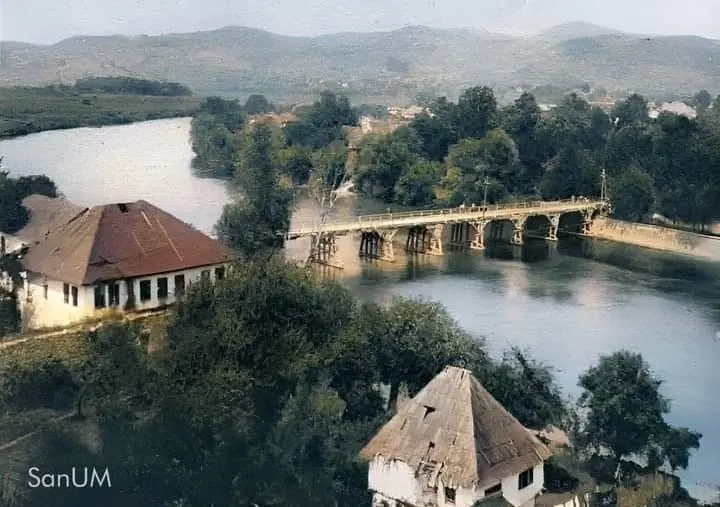
Sana i stari dio grada, kolorirana fotografijaIz knjige „Sanski Most nekad i sad“
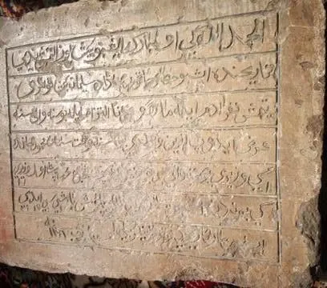
Kamena ploča sa zapadne strane kapije SaneIz knjige „Sanski Most nekad i sad“
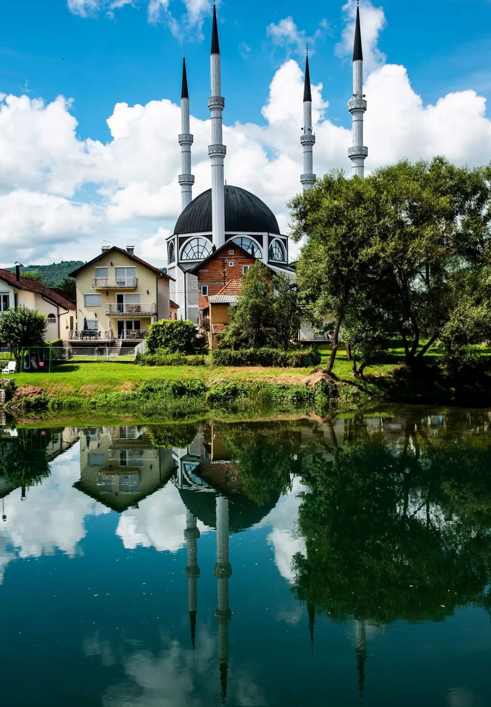
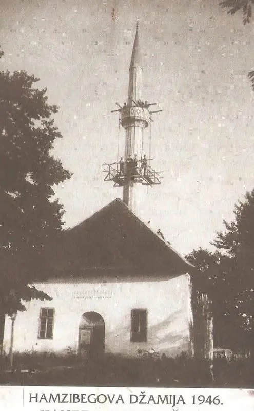
NekadDanas
Hamzibegova džamija 1946, s jednom munarom, i danas, obnovljena 2000. · Pogledajte mjesto →
1878 do 1918
IV · Austro-Ugarska
Selo postaje varošica
Austrougarska vojska ulazi u Sanski Most 8. septembra 1878, bez borbe, nakon dvodnevnih borbi za Ključ. Novi grad počinje rasti na desnoj obali Sane.
Grade se zgrada kotara, kotarski sud, žandarmerija i gruntovnica, a otvaraju se prva apoteka i prve osnovne škole, u Sanskom Mostu i Starom Majdanu. Makadamski put od Prijedora preko Sanskog Mosta do Ključa, dug 78 km, počinje se graditi 1879. Podgrmečka cesta prema Lušci Palanci i Bosanskoj Krupi gradi se od 1882. do 1894, a kasnije i uskotračna pruga prema Drvaru.
Dana 18. augusta 1915. otkriven je spomenik caru Franji Josipu I, podignut troškom građana i seljaka cijelog kotara. Tadašnje novine pisale su da je to prvi carski spomenik u Bosni i Hercegovini. Nova vlast srušila ga je već u decembru 1918.
Godine 1910. u varoši Sanski Most živjela su 2.234 stanovnika. Kotar je obuhvatao 1.017 km² i dvije gradske općine, Sanski Most i Stari Majdan. Općinski pregled za 1914. bilježi više od 50 trgovina i zanatskih radnji, hotel i agenciju Zemaljske banke.
Otkrivanje spomenika, 18. august 1915.Iz tadašnjih novina, prema knjizi „Sanski Most nekad i sad“
Novinski izvještaj o otkrivanju spomenikaIz tadašnjih novina, prema knjizi „Sanski Most nekad i sad“
Stanovnika u varoši Sanski Most, prema popisima
1879784
18851 242
18952 035
19102 234
19212 411
U cijelom kotaru 1879. je živjelo 18 371 stanovnika, a 1910. već 38 422.
1913 do 1971
V · 20. vijek
Lopta, Sokolski dom i novi most
Prvu nogometnu loptu donio je u Sanski Most krajem jula 1913. Branko Juzbašić, student u Pragu i sin gradskog ljekara. Stariji mještani nisu bili oduševljeni mladićima koji satima trče za loptom, a Prvi svjetski rat prekinuo je igru. Godine 1922. osnovan je NK Sana.
Godine 1939. građani i općina grade Sokolski dom, među prvima takve vrste u Bosni i Hercegovini. U njemu je 1944, na Drugom zasjedanju ZAVNOBiH-a, donesena Deklaracija o pravima građana Bosne i Hercegovine. Zgrada je 1995. zapaljena, a zatim srušena.
Iste 1939. preko Sane je već stajao novi, betonski gradski most. Prema popisu iz 1971, općina Sanski Most imala je 62.102 stanovnika i bila je deseta po broju stanovnika od tadašnjih stotinu općina u Bosni i Hercegovini.
Između dva rata Sanski Most je sjedište sreza, koji od 1929. do 1941. pripada Vrbaskoj banovini. Srez je 1930. imao 87 naselja u osam općina: Budimlić Japra, Dabar, Gornji Kamengrad, Lušci Palanka, Sanski Most, Sasina, Stari Majdan i Tomina. Na području današnje općine 1931. je živjelo 50.671 stanovnika, a početkom 1941. njih 65.880. U Drugom svjetskom ratu općina je izgubila 3.605 ljudi.
Jedna od prvih sanskih nogometnih ekipa (kolorirano)Iz knjige „Sanski Most nekad i sad“
Sokolski dom, izgrađen 1939.Iz knjige „Sanski Most nekad i sad“ · Pogledajte mjesto →
Pogled s novog betonskog mosta prema Mahali i Hamzibegovoj džamiji, novembar 1939.Iz knjige „Sanski Most nekad i sad“
Saveznički avion u Krkojevcima, 1944.Iz knjige „Sanski Most nekad i sad“
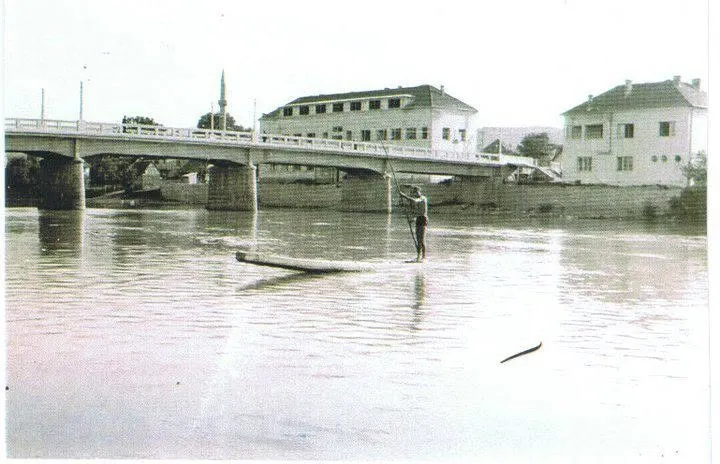
Sanski Most 1938, most i Hamzibegova džamija s rijeke
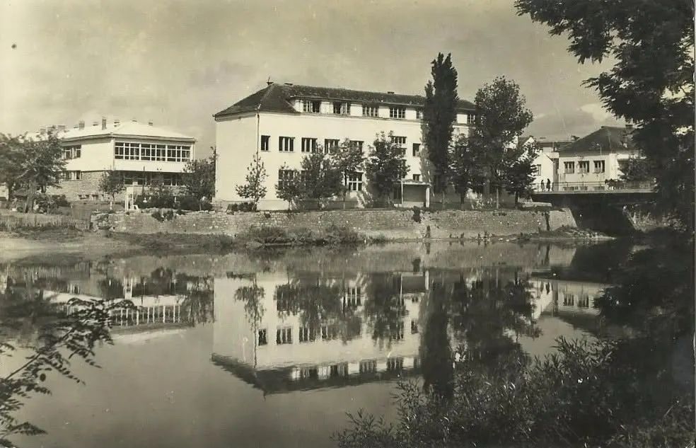
Zgrade uz Sanu, stara fotografija
Nogometna ekipa u prugastim dresovima
Betonski gradski most preko Sane
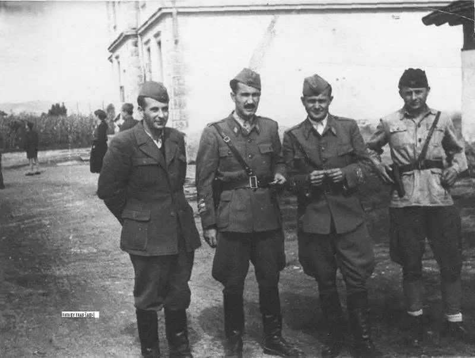
Partizani u Sanskom Mostu, oko 1941.
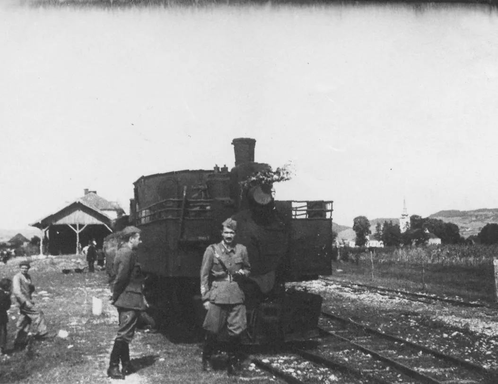
Na željezničkoj stanici, oko 1941.
1913
prva nogometna lopta u gradu
1922
osnovan NK Sana
10./100
općina u BiH po broju stanovnika 1971.
Život u gradu
VI · Kako se živjelo
Pruga, splav i kino „Sana“
Život u gradu i selima dugo se vrtio oko pruge, šume i rijeke. Ovo poglavlje je složeno od onoga što su Sanjani sačuvali: fotografija, novinskih isječaka i dva obična računa.
01
Pruga
Enciklopedija Jugoslavije iz 1968. opisuje Sanski Most kao općinsko središte na 158 m nadmorske visine, s pilanom, tvornicom panel-ploča, ciglanom, skladištem duhana, građevinskim i elektro preduzećima i rudnikom uglja u Kamengradu. Kroz grad tada prolazi uskotračna pruga koja povezuje Prijedor, Drvar i Ličku Kaldrmu.
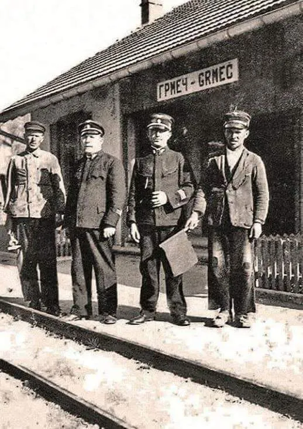
Stanica GrmečŽeljezničari ispred stanice
Rudnička lokomotiva, kraj 1960-ihMašinovođa Jasim Kalić, ispred stoji Said Talić
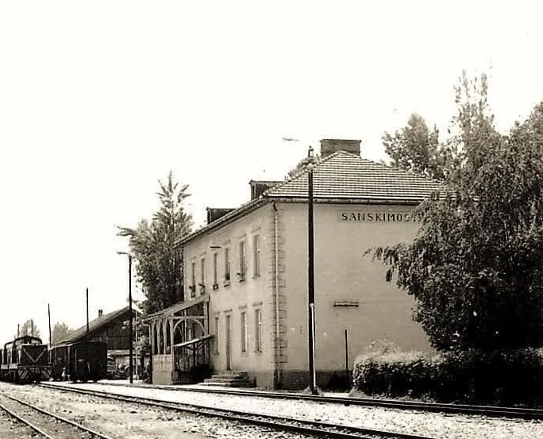
Stanica Sanski Most, 1975.Arhiv: photogalerija.com
Kratka vijest iz lokalnih novina bilježi dvije promjene na pruzi: u Bosanskom Vrhpolju je izgrađen mali drveni most na Sanici i put od jednog kilometra koji vezuje stanicu s cestom od Sanskog Mosta prema Ključu, a Sanica, nakon 16 godina, ponovo dobija staničnu zgradu, za koju je Direkcija željeznica odobrila 12 miliona dinara.
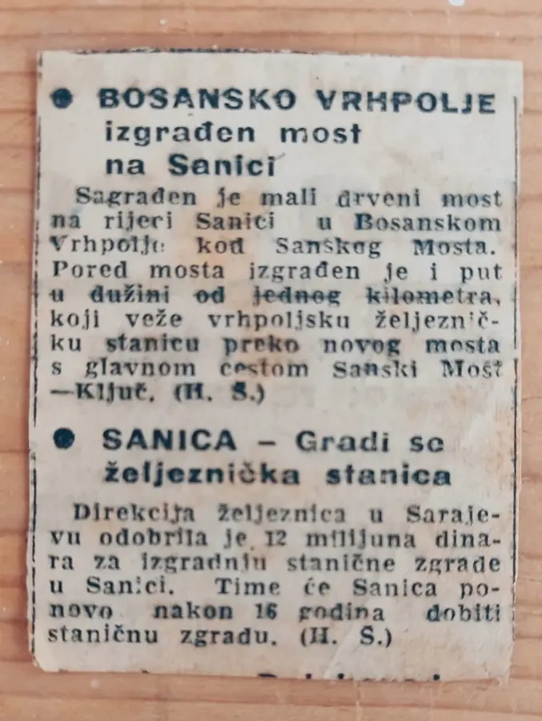
Isječak iz novina
02
Drvo niz Sanu
Splavište na Sani u ČapljuFotografija iz starih novina
Preduzeće ŠIP „Sana“ imalo je 1968. radilišta po planini, među njima Korčanicu, Mijačicu i Stanića Brdo. Matična biblioteka je tada predložila da se za radnike na njima formiraju pokretne biblioteke.
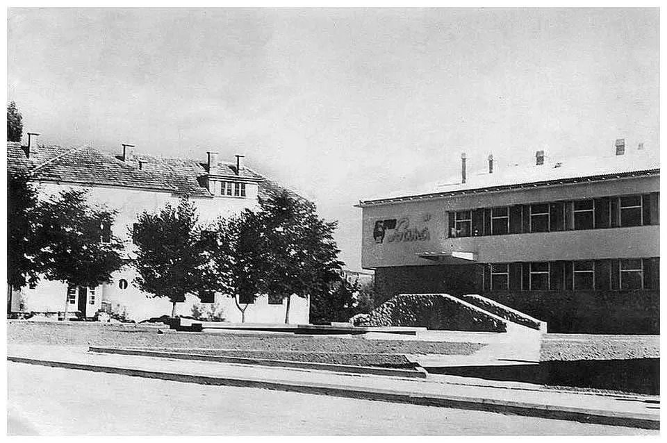
ŠIP „Sana“
03
Dva računa Društvenog doma
U februaru 1958. stolar Mijo Kosorčić napravio je četiri sanduka za drva za biblioteku Društvenog doma. Račun je pisao rukom, stavku po stavku, sve do pola kile tutkala.
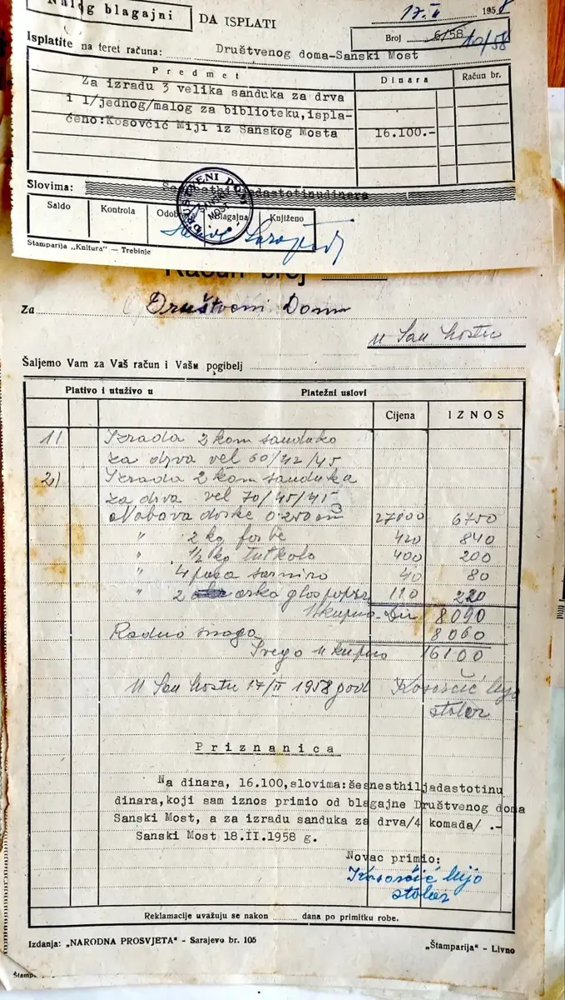
Račun stolara Mije Kosorčića, 1958.
Društvenom domu u San. Mostu
Izrada sanduka za drva
2 sanduka, 60 × 42 × 45 cm
2 sanduka, 70 × 45 × 45 cm
Daske, 0,250 m³6.750
Farba, 2 kg840
Tutkalo, ½ kg200
Šarke, 4 para80
Glaspapir, 2 arka220
Materijal8.090
Rad8.060
Ukupno, dinara16.100
Sanski Most, 17. II 1958. · novac primljen 18. II 1958. · potpis: Kosorčić Mijo, stolar
Čika Mijo je imao stolarsku radnju na samom početku Ključke ulice, a do njega obućari Husein Ćurt i Hilmo Beširević.
Zapis uz račun
Račun Ibre Suljanića, 1959.
200 dinara Godinu i po kasnije, 21. novembra 1959, Ibro Suljanić je Društvenom domu naplatio prenošenje 12 sepeta drva od zgrade NOO-a do doma.
Banka u Ključkoj ulici
Na imanju sefardske porodice Atijas u Ključkoj ulici radila je privatna banka. Osnovali su je lokalni jevrejski trgovci. Isak Atijas i njegova supruga Rifka držali su radnju u gradu, a njegov brat Avram živio je sa suprugom Mazaltom na obali Sane.
04
Kino „Sana“, august 1968.
Kino „Sana“ prikazuje
August 1968.
1-2Bokseri idu u raj
3-4Alvares
5Bitka u Africi
6Prerija časti
7-8Ko će da ubije Džesi
10-11Arabska
12Naši muževi
13-14Kako ćeš ukrotiti milion
15-16Velika zmija
17-18Mat Helm, tajni agent
19Udaljena truba
20-21Amerika, zemlja obećana
22-23Prijateljstvo
24-25Lord Jim
26Strah
27-28U sjenci Kolta
29-30Žandarm u Njujorku
Kino je imalo i pokretno kino od 35 mm, koje je gostovalo po selima: Budimlić-Japra, Podvidača, Lušci-Palanka, Vrhpolje, Tomina, Gornji Kamengrad, Trnova, Jelašinovci, Čaplje, Fajtovci.
„Zajednica“, br. 6: August u Sanskom Mostu
Ista stranica donosi i radno vrijeme biblioteke: svaki dan osim nedjelje, od 9 do 12 i od 14 do 17 sati, a čitaonica do 22 sata. Po selima su radile čitaonice i pokretne biblioteke.
1986.Grmečka korida, Međeđe brdo1975.Slet za Dan mladosti, stadion NK „Podgrmeč“, 25. maj1938.Mještani grade crkvu u Sasini
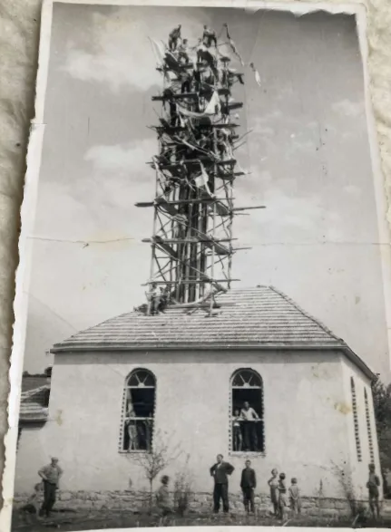
1962.Gradnja munare u Šehovcima
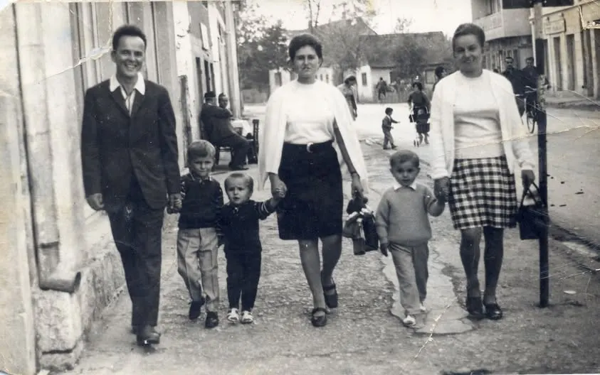
1972.Šetnja kroz grad
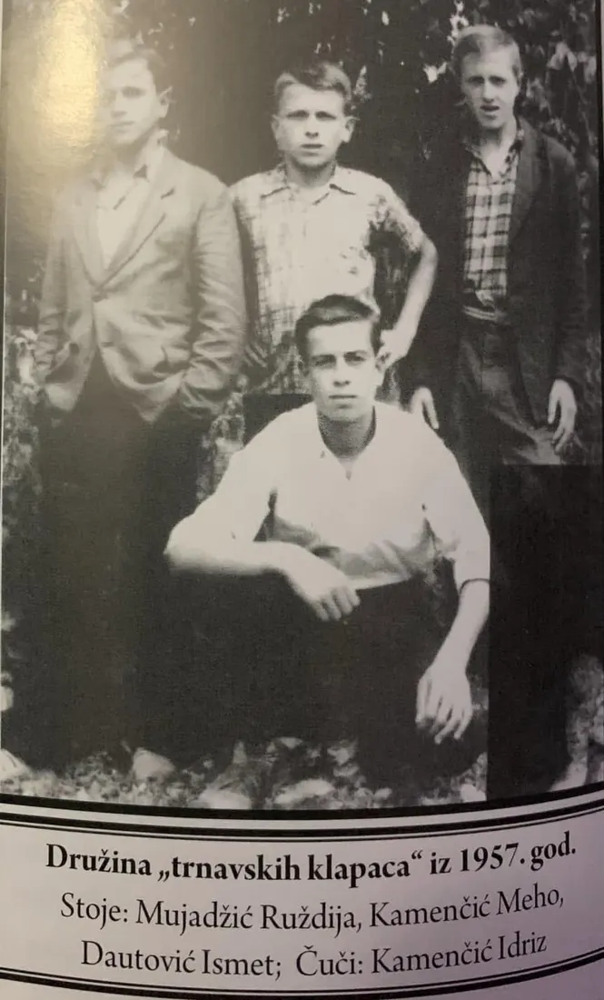
1957.Družina „trnavskih klapaca“, Trnova
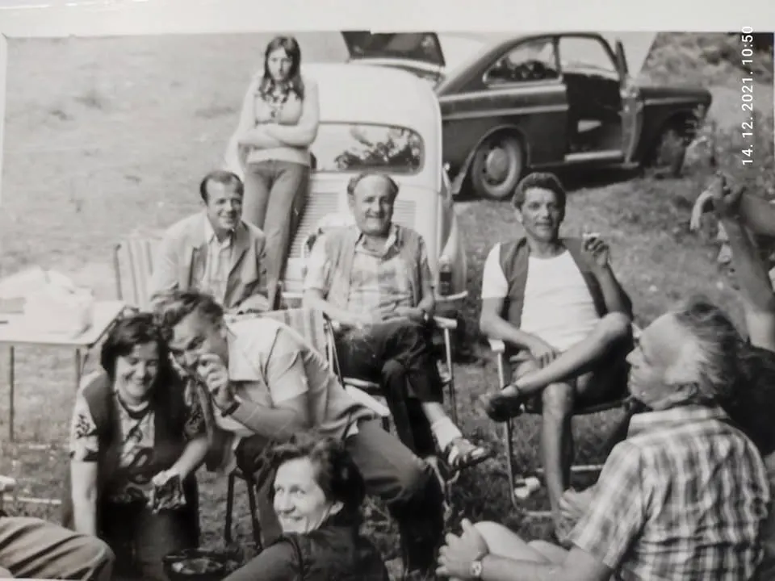
1970-eRadnici pošte na izletu kod ušća Dabra
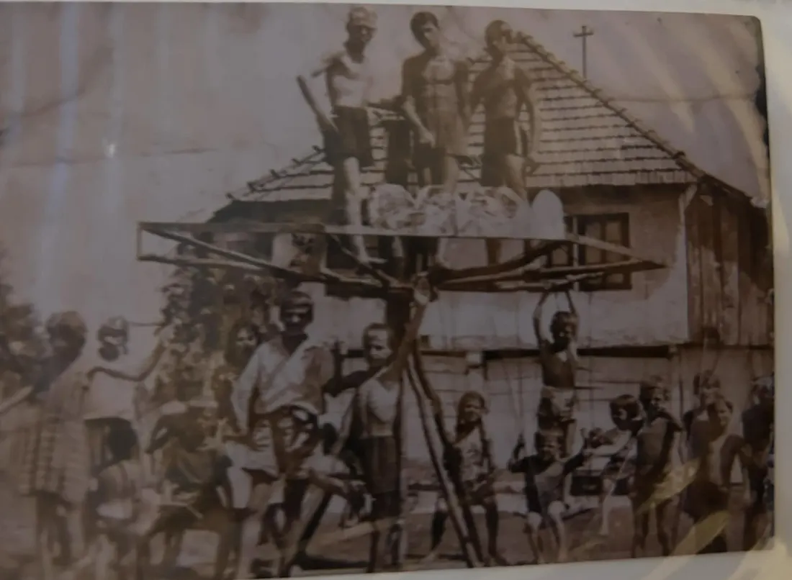
Drveni ringišpil, napravljen rukom, u Karićima
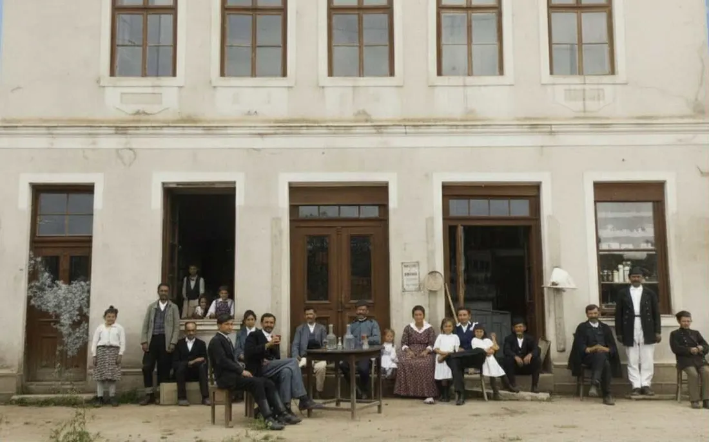
1938.Porodična kuća Brace Progomolje
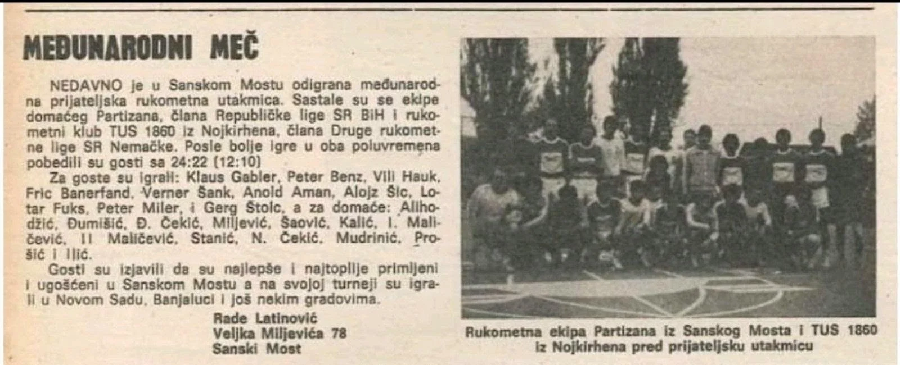
„Međunarodni meč“, novinski izvještaj o prijateljskoj utakmici sanskog Partizana i ekipe TUS 1860Otvori isječak u punoj veličini
Kako je počela općinska nogometna liga
Pokretanje lige počelo je 1975. na inicijativu Fudbalskog podsaveza Banja Luka. Podgrmeč je pokrenuo osnivanje općinskog saveza, a na tome su radili Rasim Bahtić i Tihomir Rudić. Mjesne zajednice pomagale su klubovima da dobiju igrališta. Nakon nezvanične sezone 1978/79, prvo službeno prvenstvo odigrano je 1979/80.
Prvaci općinske lige
Sezona
Prvak
Bodovi
1979/80
Radnički, Zdena
33
1980/81
Rudar, Kamengrad
29
1981/82
Kruhari
27
1982/83
Grmeč, Lušci Palanka
27
1983/84
Sloboda, Mahala
35
1984/85
Kiseljak, Koprivna
26
Poredak po sezonama
1979/80
#
Klub
Bodovi
1
Radnički
33
2
Jedinstvo
31
3
Sloboda
26
4
Kruhari
24
5
Zadrugar
22
6
Bratstvo
20
7
Kiseljak
20
8
Rudar
18
9
Borac
10
10
Sana
8
1980/81
#
Klub
Bodovi
1
Rudar
29
2
Grmeč
29
3
Sloboda
25
4
Zadrugar
23
5
Kruhari
21
6
Famos
20
7
Bratstvo
19
8
Kiseljak
17
9
Sana
14
10
Polet
13
11
Borac
10
1981/82
#
Klub
Bodovi
1
Kruhari
27
2
Sloboda
27
3
Bratstvo
25
4
Grmeč
21
5
Kiseljak
20
6
Famos
20
7
Polet
9
8
Zadrugar
9
9
Borac
9
10
Sana
9
1982/83
#
Klub
Bodovi
1
Grmeč
27
2
Sloboda
22
3
Kiseljak
21
4
Sana
20
5
Zadrugar
18
6
Famos
16
7
Polet
15
8
Borac
11
9
Trnova
10
10
Bratstvo
9
1983/84
#
Klub
Bodovi
1
Sloboda
35
2
Kruhari
29
3
Kiseljak
26
4
Mladost (Poljak)
23
5
Zadrugar
23
6
Famos
21
7
Bratstvo
17
8
Polet
15
9
Trnova
13
10
Borac
13
11
Sana
8
1984/85
#
Klub
Bodovi
1
Kiseljak
26
2
Kruhari
25
3
Mladost (Poljak)
24
4
Bratstvo
21
5
Zadrugar
18
6
Borac
18
7
Famos
15
8
Sana
15
9
Trnova
10
10
Polet
8
U narednim sezonama u grupnu ligu Sana plasirali su se i Borac iz Podluga (1986/87) i Brastvo iz Starog Majdana (1987/88).
Radnički je prvu sezonu završio dva boda ispred Jedinstva iz Tomine. Oba kluba plasirala su se u novoosnovanu grupnu ligu Sana. ŠIP „Sana“ pomagao je Radničkom oko prevoza, opreme i svlačionica. Jedinstvo su podržavali zemljoradnička zadruga, mjesna zajednica i lokalna preduzeća.
„Svaki zaposleni član kluba“, novinski zapis o Radničkom iz Zdene
Ibričić i prijatelji
Edin Džeko je 25. decembra 2009. prvi put posjetio Senijada Ibričića u Sanskom Mostu. Gradska sportska dvorana ugostila je humanitarnu utakmicu „Ibričić i prijatelji“. Fotografije su objavljene 2015. u knjizi „35 godina ONK Sloboda“.
Dana 10. oktobra 2010. u deset sati učenici od šestog do devetog razreda i srednjoškolci krenuli su iz četiri ulice prema zajedničkom cilju. Trkama su obilježili 15 godina od oslobođenja grada.
Gimnazija na obali Sane, kolaž pogleda na školu i njenu okolinu
S Gradskog mosta široke stepenice vodile su prema školi na lijevoj obali. Preko puta, kod fontane, učenici su čekali zvono.
Moja generacija je bila posljednja koja je školovana u staroj gimnaziji. U staroj zgradi smo završili prvi razred, a onda je otvoren moderan Srednjoškolski centar i mi smo školovanje nastavili tamo.
Iz sjećanja Admira Jakupovića
Pročitaj cijelo sjećanje
Admir Jakupović
Hakala: snimanje spota
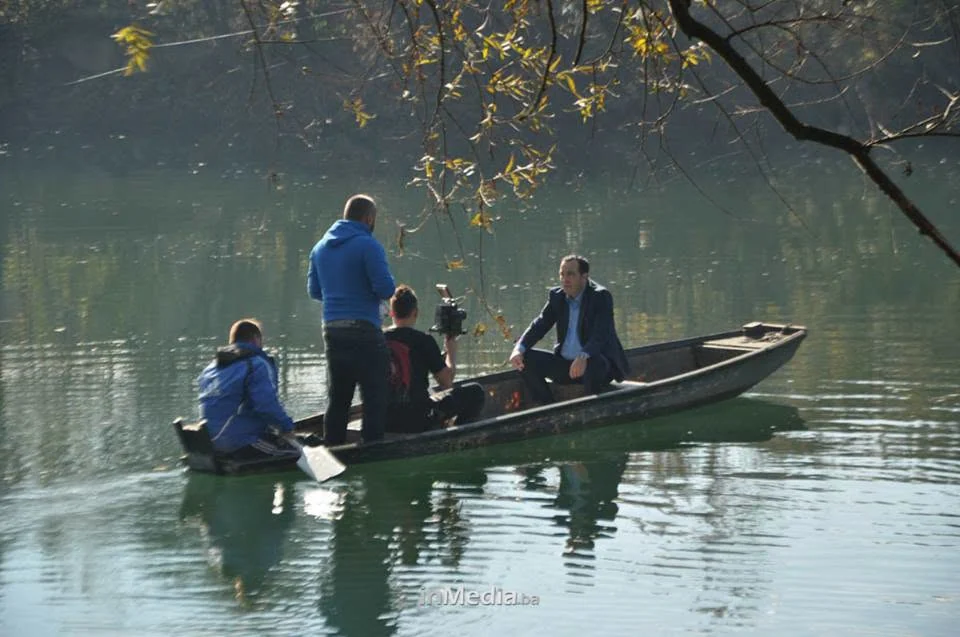
Snimanje iz čamcaKamera na pramcuČamac uz obalu
16.100
dinara za četiri sanduka za drva, 1958.
17
filmova u kinu „Sana“ za jedan august, 1968.
35mm
pokretno kino koje je obilazilo sela
Sana
VII · Grad i rijeka
Grad i rijeka
Sana je gradu dala ime, ali ga je i plavila. Knjiga „Sanski Most nekad i sad“ bilježi velike poplave od 1956. do danas.
Posljednje otvoreno prvenstvo grada u plivanju održano je 27. jula 1983. Plivalo se niz Sanu od plaže Slap do Gradskog mosta.
U Sanskom Mostu je 9. jula 1902. izmjereno 44,5 °C. Meteorološka stanica u gradu zabilježila je 17. februara 1956. temperaturu od -30,3 °C.
Prijava za takmičenje, 18. juli 1983.
Plivači na obali Sane
Učesnici plivačkog prvenstva
Poplava u centru grada, stara fotografija
Poplavljene kuće uz Sanu
Kroz poplavljenu ulicu, stara fotografija
Poplava, 23. 9. 1996.
Nabujala Sana kod Gradskog mosta, 2014.
Čamcem kroz grad, 2014.
Poplavljena ulica, 2014.
Konjska zaprega u poplavi, 2014.
Kamion i konj u vodi, 2014.
Zaleđena Sana
Na ledu, ispred mosta na Sani, oko 1985.
Veliki snijeg
Kupanje na Sani
Skok s drvenog mosta
Skok s Mašinskog mosta
Lovac, 1968.
Većina fotografija iz knjige „Sanski Most nekad i sad“
Mašinski most s obale
Mašinski most u sumrakPogled prema Mašinskom mostu s klupa na obali
44,5°C
julski rekord iz 1902.
~1000m
plivalo se od Slapova do Gradskog mosta
1956
prva od velikih poplava u knjizi
Ulice grada
VIII · Ulice kroz vrijeme
Ista mjesta, druge godine
Mjesta u gradu kroz vrijeme: od razglednica s početka 20. stoljeća do fotografija koje je Edin Šarčević snimio od 1996. do 1998.
01 · 1961, 1976, 1997
Prijedorska ulica
Ista ulica u tri vremena: drvored 1961, voda 1976. i proljeće 1997.
Stari „Lovac“ uz slap 1968. i gradilište nove zgrade u novembru 2005.
1968„Lovac“, 1968.Iz knjige „Sanski Most nekad i sad“
2005Gradnja nove zgrade, 26. 11. 2005.
Gradski most
Preko Gradskog mosta
Pogled s Gradskog mosta, novembar 1939. · Iz knjige „Sanski Most nekad i sad“Gradski most s obaleStubovi Gradskog mosta nad SanomIspod žute ograde mosta
Izvori
Jasmin Zukanović, Sanski Most nekad i sad. Izvor za većinu starih fotografija u ovim poglavljima.
Hamdija Kreševljaković, „Kamengrad“, Naše starine VI (1958): karta župa Sana i Mren.
Tehvid Jakupović, 60 godina FK Podgrmeč (2004), sjećanja Slave Došena: prva nogometna lopta i prvi klubovi.
Institut za istoriju, Prilozi 35. Podaci o stanovništvu grada prema popisima 1910. i 1921.
Općina Sanski Most, „Historija općine Sanski Most“: srednji vijek, osmanski period, kotar 1910. i 1914., srez između dva rata i opis iz Enciklopedije Jugoslavije (1968).
„Zajednica“, br. 6 (august 1968), stranica „August u Sanskom Mostu“: program kina „Sana“, biblioteka i čitaonice.
Edin Šarčević: fotografije grada iz 1996-1998, s datumima na stranicama albuma.
Računi Društvenog doma iz 1958. i 1959. i zapis o stolaru Miji Kosorčiću.
Ako ste autor neke od ovih fotografija ili znate ko jeste, javite nam se, da je potpišemo ili uklonimo.